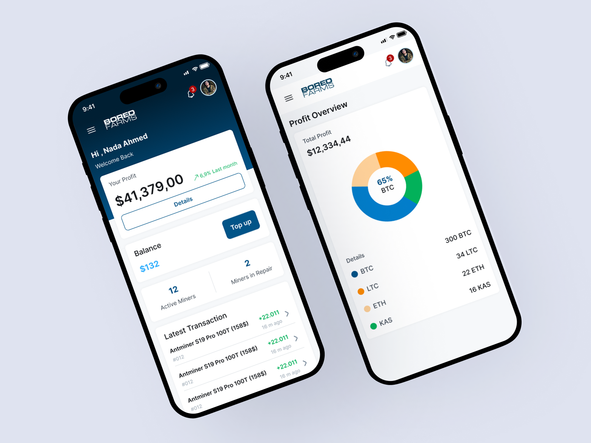

Bored Farms: Real-Time Crypto Mining & FinTech Wallet Experience
I led the end-to-end mobile design for a crypto mining and FinTech platform, simplifying real-time hardware monitoring, wallet analytics, 1-tap withdrawals, and invoice repayments.

Context & Scope
Bored Farms is a mobile FinTech platform that enables investors to monitor crypto-mining hardware, track daily earnings, manage hosting invoices, and withdraw profits. As my first project as a Design Team Leader, the goal was to make complex technical and financial data effortless to manage on mobile.
- Owned end-to-end design for complex financial flows, wallet dashboards, and real-time mining analytics.
- Simplified miner health monitoring, profit tracking, 1-tap withdrawals, and invoice repayments into clear mobile flows.
- Mapped user role flows and multi-tier permissions to ensure secure asset and wallet management.
- Architected a scalable mobile design system from scratch to keep data-heavy financial screens consistent.
User Experience Barriers & Business Impact
- Overwhelming technical and financial data: Crypto mining involves dense metrics hashrates, uptime, power usage, and fluctuating payouts that were hard to read on mobile screens. intuitive platform used by teams across both countries.
- Complex withdrawal and repayment flows: Multi-step wallet transfers and scattered hosting invoices created friction and hesitation during financial transactions.
- Lack of real-time visibility: Investors had no quick way to spot offline mining hardware or check net daily earnings at a glance.
- Inconsistent UI scaling: Without a unified design system, adding new wallet and analytics modules risked cluttering the mobile experience.
Insight 01: Investors Wanted Clear Profit Visibility, Not Raw Technical Logs
Users opened the app daily to answer two simple questions: Are my miners running smoothly? and How much did I earn today?
- Decision (Real-Time Wallet & Analytics Dashboard): Designed a scannable home dashboard highlighting daily net profit, live hardware status (Online/Offline), and interactive earnings charts.
- Decision (Scalable Mobile Design System): Built a clean component library from scratch to standardize dense technical and financial metrics into easy-to-read cards.
Insight 02: Financial Flows Needed Speed and Transparency
Users hesitated when executing crypto withdrawals or paying hosting bills due to unclear steps and scattered invoices.
- Decision (1-Tap Withdrawals & Payout Tracking): Streamlined profit withdrawals into a guided mobile flow with upfront fee breakdowns and live transaction tracking.
- Decision (Simplified Invoice & Repayment Management): Centralized hosting bills, due dates, and repayment histories in one dedicated hub so users can settle balances without friction.

Workflow & Usability Validation
To ensure complex crypto and financial actions felt intuitive for everyday investors, we validated interactive prototypes across core user journeys:
- Evaluation: Tested key mobile flows—monitoring miner performance, executing a wallet withdrawal, and completing an invoice repayment.
- Result: Separating hardware health from wallet transactions reduced visual overload and made financial actions fast and error-free.
- Launch: Delivered a complete, production-ready FinTech mobile application backed by a scalable design system.
Delivering an Intuitive Mobile FinTech & Mining Experience
- Real-Time Miner Monitoring: Live hardware status cards, hashrate tracking, and instant offline alerts.
- Wallet & Profit Analytics: Interactive earnings charts, balance summaries, and transparent payout histories.
- 1-Tap Withdrawals: Fast, guided withdrawal sheets with clear wallet verification and fee details.
- Invoice & Repayment Hub: Organized hosting invoices, payment statuses, and simplified repayment tracking.

Impact & Results
- Simplified Complex FinTech Flows: Turned dense crypto-mining metrics and wallet operations into a clean, accessible mobile experience.
- Frictionless Financial Management: Streamlined 1-tap profit withdrawals and invoice repayments, improving platform usability and user trust.
- Design Leadership & System Scale: Led the end-to-end design direction and built a scalable design system from scratch that unified all product modules.